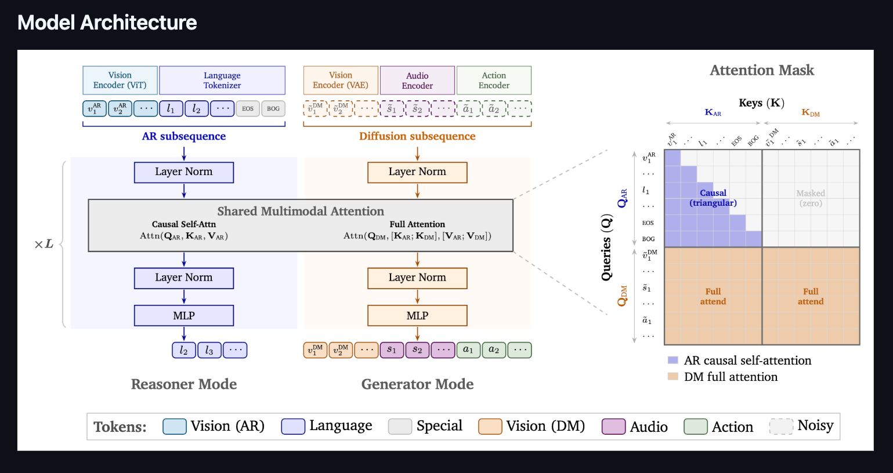
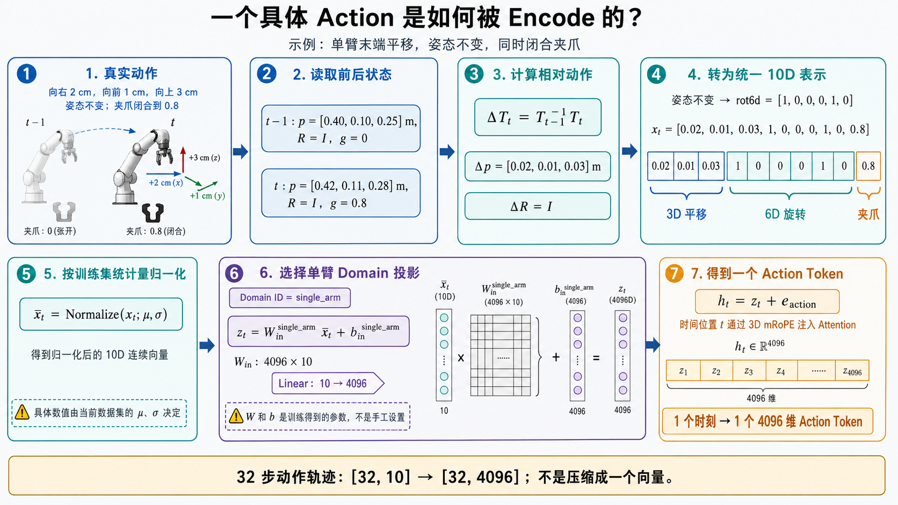
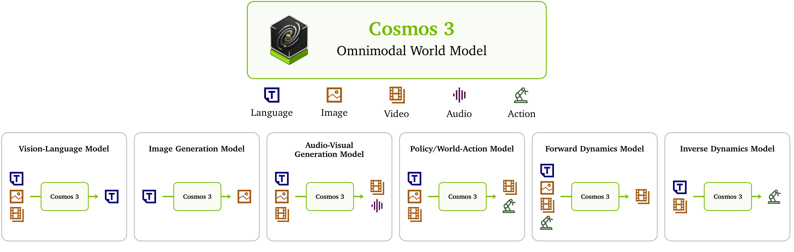
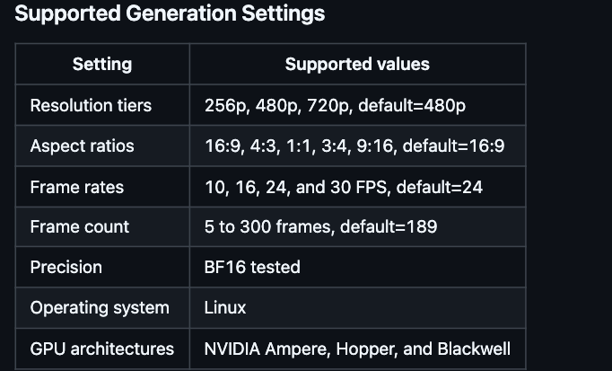
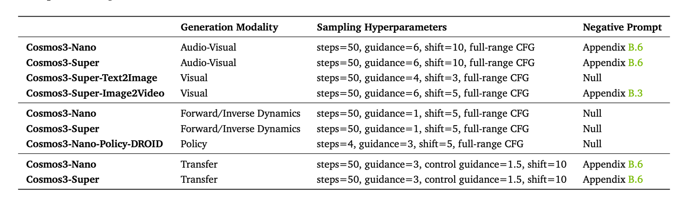

1、模型架构
整个，cosmos3系列的模型，都是全模态模型，输入分为语言、视觉、音频、动作。

针对这个cosmos模型而言，其分为两部分，Reasoner和Generator，以cosmos3-nano为例，reasoner和generator分别占了约8B，然后cosmos3-nano整个占了16B的大小
1.1 Reasoner Mode
当前这一部分主要是用qwen-vl系列模型来做多模态的理解，输入是vision和text，然后输出是text token，
1.2 Generator Mode
这一部分是传统生成模型的流程，这里针对视频、音频以及action分别都有各自不同的encoder，然后通过一层proj之后，全部映射到generator transformer中，这个hidden size是4096维。
1.2.1 action encoder
这里和传统的video gen模型（或者说全模态模型）不同的点在于这个action的输入，我视频的每两帧之间，都会有一个action的参数，来标记当前action的动作是什么（也就是帧的转移）

1.3 Cosmos3 - Nano 输出
Cosmos3 有多种不同的输出：

以下是cosmos3-nano支持输出的视频格式

Cosmos3系列模型在采样所需要的参数列表，可见除了only action输出只需要4 steps去噪，其他都建议是50 steps做去噪。

2、后训练 Cosmos3系列模型
训练数据中的视频，感觉可以初步对齐cosmos3中默认的生成视频的格式：
分辨率：832 × 480
帧率：24 FPS
帧数：189帧
时长：189 ÷ 24 = 7.875秒